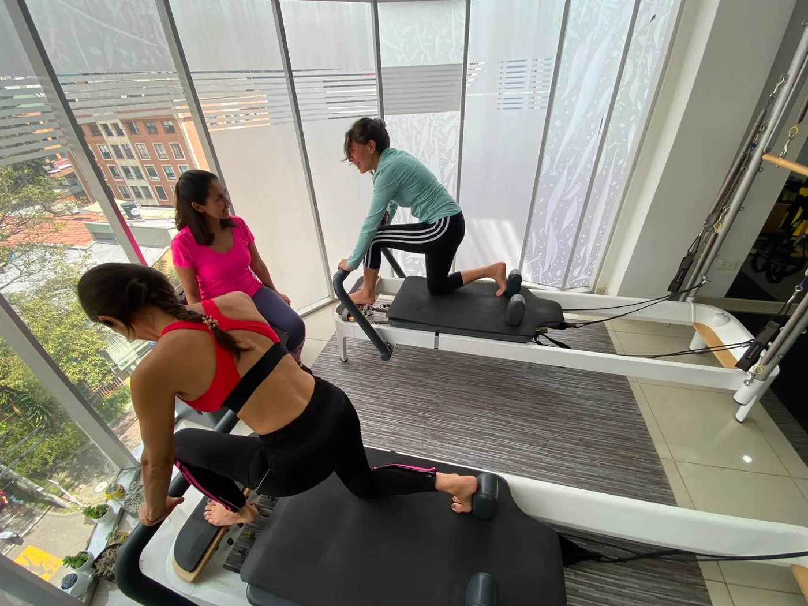
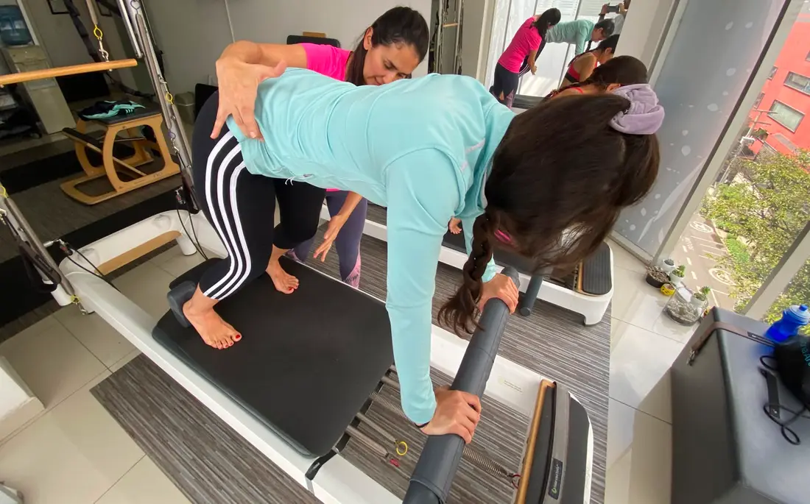
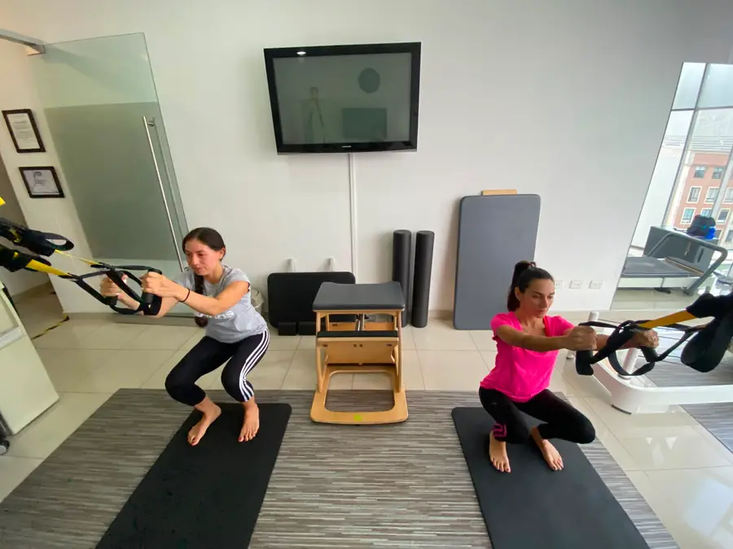

Pilates
Clases personalizadas para fortalecer, ganar flexibilidad y mejorar la postura y el control del movimiento.
Cada clase se adapta a ti, a tu cuerpo y a tus objetivos, con la guía de una fisioterapeuta.
Conocer másClases personalizadas con la fisioterapeuta Gloria Arenas, en un ambiente cálido y tranquilo, para que te muevas mejor y te sientas bien.

Con la fisioterapeuta Gloria Arenas puedes lograr múltiples beneficios con pilates o hipopresivos, de forma individual o combinada. Son formas de ejercicio diseñadas por expertos en movimiento corporal humano.
Clases personalizadas para fortalecer, ganar flexibilidad y mejorar la postura y el control del movimiento.
Cada clase se adapta a ti, a tu cuerpo y a tus objetivos, con la guía de una fisioterapeuta.
Conocer másTécnica de ejercicio basada en la postura y la respiración, guiada paso a paso por una fisioterapeuta.
Puedes practicarla sola o combinada con pilates.
Conocer másEntrenamiento en suspensión, adaptado a tu nivel, para trabajar fuerza y estabilidad de forma segura.
Un espacio de pilates pensado para acompañar el embarazo, con la guía de una fisioterapeuta. Conocer más
Atención para personas con una patología específica, con acompañamiento profesional de fisioterapia.
Para quienes simplemente quieren sentirse bien, mantenerse activos y cuidar su cuerpo.
Clases de pilates duales
| Clases al mes | Valor |
|---|---|
| 1 a 5 veces al mes | $75.000 |
| 6 a 9 veces al mes | $71.000 |
| 10 a 13 veces al mes | $68.000 |
| 14 a 17 veces al mes | $61.000 |
15% de descuento por ser familia
| Paquete | Valor |
|---|---|
| 23 clases que deben ser vistas en 3 meses | $1.388.000 |
| 30 clases que deben ser vistas en 3 meses | $1.734.000 |
Un espacio de pilates pensado para mujeres embarazadas, en un ambiente tranquilo y acogedor, con el acompañamiento de la fisioterapeuta Gloria Arenas.
Las clases son personalizadas y se adaptan a ti y a esta etapa de tu vida.
El Pilates puede acompañarte durante los tres trimestres del embarazo, siempre que tu médico lo autorice.
Preguntar por WhatsApp Conocer más

Gloria Arenas es fisioterapeuta y dirige este espacio de pilates, hipopresivos, TRX y rehabilitación en Bogotá. Su trabajo une el conocimiento del movimiento corporal humano con una atención cercana y personalizada.
Es fisioterapeuta de la Universidad del Rosario, con énfasis en ejercicio físico, y tiene más de 20 años de experiencia trabajando con Pilates y rehabilitación.
Conocer su perfil profesionalUn lugar distinto a los estudios de pilates y gimnasios típicos, pensado para personas con una patología específica y para quienes quieren sentirse bien.
Cada clase se adapta a ti, a tu cuerpo y a tus objetivos, con la guía de una fisioterapeuta.
Un espacio tranquilo y cercano, donde puedes entrenar con confianza y sin presión.
Clases para máximo dos personas.
Empezar es sencillo. Estos son los pasos para tu primera clase.
Cuéntanos qué buscas y si tienes alguna patología o molestia específica.
Gloria conoce tu caso y tus objetivos para entender cómo acompañarte.
Armamos un plan de pilates, hipopresivos o TRX, solo o combinado, adaptado a ti.
Un espacio luminoso, con equipos de pilates y TRX, grandes ventanales y vista a los árboles.





Conoce qué es el pilates, qué son los hipopresivos y escucha la experiencia de la actriz Alejandra Lara.
Una introducción a nuestro espacio y a este método de ejercicio.
La actriz Alejandra Lara cuenta su experiencia.
Una explicación sencilla de esta técnica.
★★★★★
Gloria tiene una metodología personalizada que se enfocaba en mis necesidades. En caso puntual me ayudó a mejorar mi estado físico y fortalecer al mismo tiempo que tenía en cuenta una lesión que tenía antes por jugar fútbol. Las combinación de hipopresivos y pilates me dio muy buenos resultados.
★★★★★
Me encanta hacer pilates con Gloria, me ha ayudado un montón para aliviar los dolores de mi artritis y mantenerme en forma. Además, es un espacio super personalizado y ameno. ¡Recomendada!
★★★★★
Cada sesión de Pilates es maravillosa para el cuerpo y para el alma. Y duele antes durante y despues como debe ser!
Para personas adultas de distintas edades y condiciones físicas que quieren moverse mejor y sentirse bien. Cada clase se adapta a ti. Si tienes una patología específica, cuéntaselo a Gloria al escribirnos.
No. Las clases son personalizadas y se adaptan a tu nivel, así que puedes empezar desde cero.
Ropa cómoda y elástica que te permita moverte con libertad.
TODO: confirmar con Gloria (duración de cada clase)
Son una técnica de ejercicio basada en la postura y la respiración, guiada paso a paso por una fisioterapeuta. En la sección de videos hay una explicación sencilla.
Escríbenos por WhatsApp al 318 715 9369 y coordinamos tu primera clase.